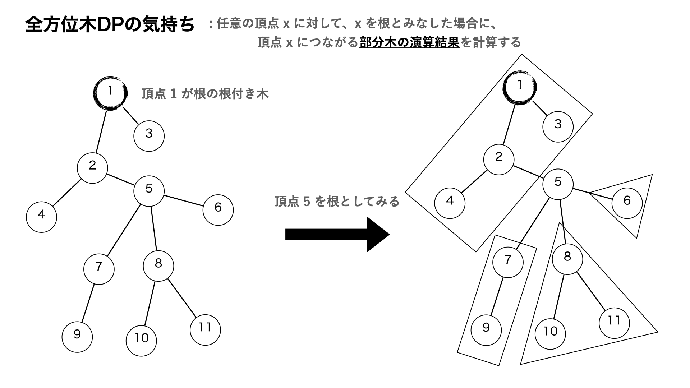
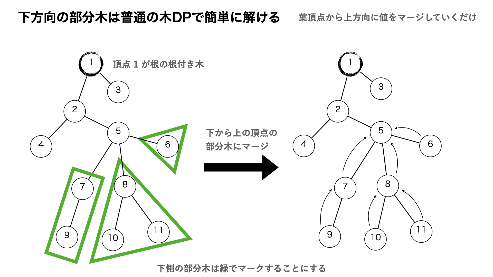
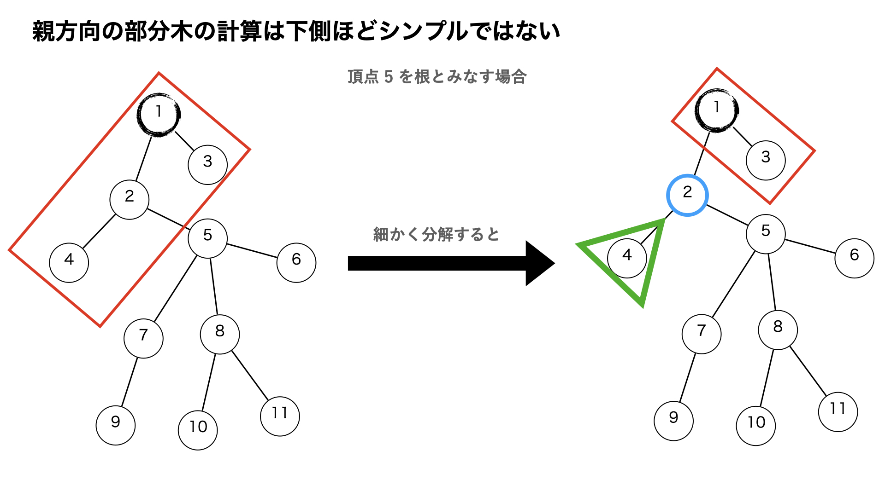
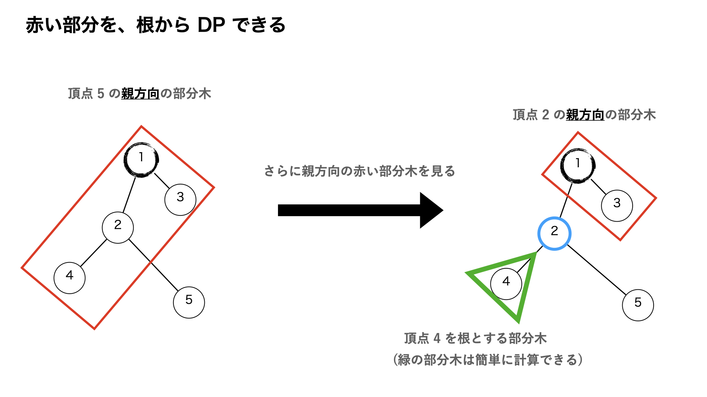
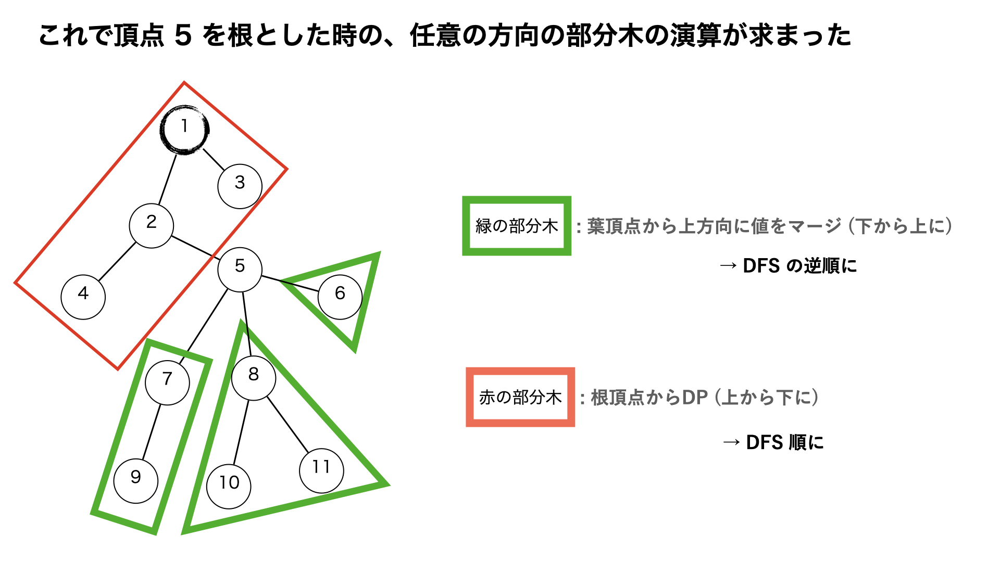
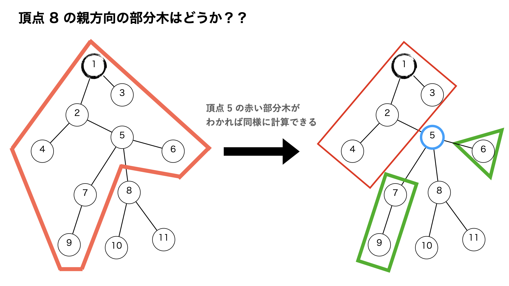
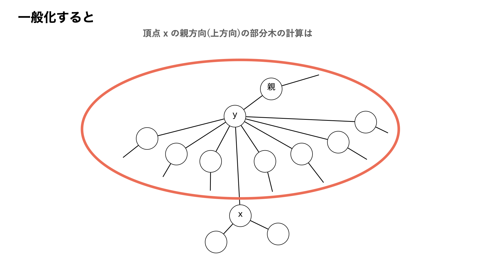
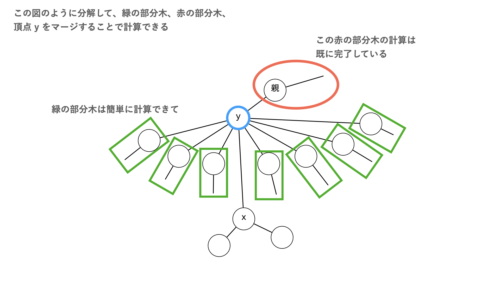
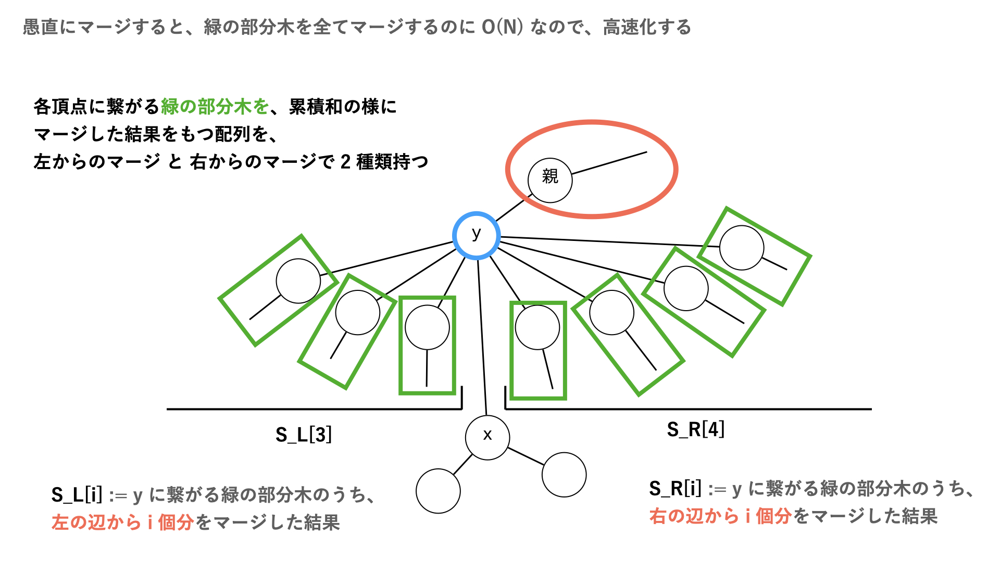
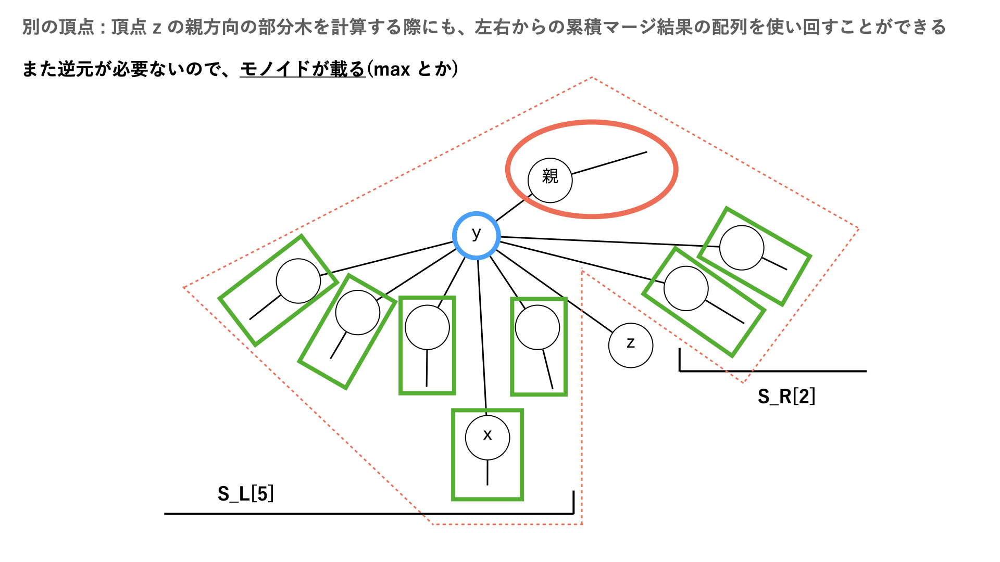

記事を書くのが面倒なので、スライドをペタリんこします。










ライブラリ化するより、その場で書いた方が良いです。
/*
Copyright ©️ (c) okoteiyu 2024.
Released under the MIT license(https://opensource.org/licenses/mit-license.php)
クラス冒頭の関数で抽象化されています。 各演算の説明は以下の通りです。
S : 木が持つデータの型 - dp/rdp
P : ans に持たせるデータの型
S_op , S_merge , add_SubTree など、DP の演算用の関数がある
++++引数は変えずに、中身の処理を変えるだけで良い様になっています++++
S_ie : S 型の単位元
leaf_init : 子がない頂点における accum_ の項の値
const S leaf_init;// 葉頂点 : 次数 1 の頂点の dp,rdp の初期値
// merge 関数で流用できるように、できれば OP(a , b , c , d) == OP(OP(OP(a,b),c),d) を満たしているとありがたい
S S_op(const S a ,const S b) :
: dp 遷移で辺の先のマージ方法(Σなら+ , Πなら* , 最大値なら max)
S_merge(S& accum_,const edge &e) : ΣやΠの中身の式に対応
: ΣやΠ などに対応する累積データ accum_ に、辺 e の先の情報をマージする。関数の中で ΣやΠ の内側の式を書く
S add_SubRoot(const S accum_ ,const int v) : ΣやΠの外側の式に対応
: 頂点 v から出る辺の先の累積データに、頂点 v のデータをマージする
以下、使用例
dp[v] = Σ(部分木データ+1) + val[v] のような遷移を考えるなら、
S_ie = 1
S_op(a,b) = a×b (Πの演算に対応)
S_merge(ac,edge) : ac = S_op(ac , subt + 1); (Πの中身に対応...subtは部分木のデータ)
add_SubRoot(ac , v): 2*ac + val[v] ; (Πの外の式に対応)
dp[v] = v を根とする下方向部分木に属する頂点のうち、v から最も遠い頂点までの距離 (辺重みの和)
S_ie = 0
S_op : max
S_merge(ac,edge) : S_op(ac,dp[edge.to]+edge.w)
add_SubRoot(ac,v) : ac
ABC36-D(黒が隣り合わない塗り方)の場合
S dp[v] = pair<ll,ll> : {v が白でも黒でも良い場合 , v が白の場合} として解く
P 型演算も、ans の中身 ver. で S 型と同様に関数を書けばいい
テンプレートとして、 EDPC_V - Subtree の場合の演算を実装してある。
コンストラクタ : 頂点数 など、必要なデータを渡す
add_edge() : 無向辺を追加 (u,v,w) or (u,v)
update_val : 頂点の値を変更 (オフライン)
build(root = 1) : ans を計算(rootは計算用の暫定的な根)
ans[x] := 頂点 x を根とみなした場合の回答
*/
class rerooting{
/*
Copyright ©️ (c) okoteiyu 2024.
Released under the MIT license(https://opensource.org/licenses/mit-license.php)
*/
private:
// 抽象化の関数たち
//++++引数は変えずに、中身の処理を変えるだけで良い様になっています++++
// 例題 : 以下の関数たちは EDPC_V - Subtree 用の演算です。
// 問題文 : 木 G の各頂点 v に対して、連結な誘導部分グラフであり、頂点 v を含むものの個数を mod m で求めよ。
// dp[v] の式 : dp[v] = Π(dp[e.to]+1) % m
using S = long long; // 木のデータ
using P = long long; // ans に書き込むデータ
// データメンバのみ持つ(初期化は {} を使う)
// S 型の重み w を持つ
struct edge{ int from ; int to; S w; };
long long m; // 割る値(EDPC-V)
/* S 型演算*/
const S S_ie = 1; // S 型 op の単位元 (+ なら 0 , × なら 1 , max なら NINF など)
const S leaf_init = 1;// 葉頂点は子を持たないので、子がない場合の accum_ の項の初期化が必要
// (add_SubRoot(leaf_init,v) は行われるので。それを考慮した初期化をする必要がある)
// (add_SubRoot(leaf_init,v) は行われるので。それを考慮した初期化をする必要がある)
// (add_SubRoot(leaf_init,v) は行われるので。それを考慮した初期化をする必要がある)
// dp 遷移で辺の先のマージ方法(Σなら+ , Πなら* , 最大値なら max)
// merge 関数で流用できるように、できれば OP(a , b , c , d) == OP(OP(OP(a,b),c),d) を満たしているとありがたい
// merge 関数で流用できるように、できれば OP(a , b , c , d) == OP(OP(OP(a,b),c),d) を満たしているとありがたい
S S_op(const S a ,const S b){
return a*b%m; // 今回は Π に対応
}
// ΣやΠ などに対応する累積データ accum_ に、辺 e の先の情報をマージする。関数の中で ΣやΠ の内側の式を書く
// rev が true なら e は v から見て上側 (tmp_root の方向) に伸びる辺 (rdp の計算時など)
void S_merge(S& accum_,const edge &e , bool rev){
S subt = dp[e.to];;
if(rev)subt = rdp[e.from];
S f = subt + 1;// ΠやΣの内側の式
accum_ = S_op(accum_ , f ); // Π(subt+1) であるということに対応
}
// 頂点 v から出る辺の先の累積データに、頂点 v のデータをマージする
// rev が true ならv から見て上側 (tmp_root の方向) を対象にマージを行う
// ( Euler Tour を使いながらの 全方位木DP だと、rev が意味をなす)
S add_SubRoot(const S accum_ ,const int v , bool rev){
return accum_%m + 0; // ( Π%m + 0 という遷移式に対応)
}
/* P 型演算(ans) : ある頂点 v を根とした場合の答えを計算*/
const P P_ie = S_ie;
const P ans_init = leaf_init;// 次数 0 の頂点は、うまく処理できないので初期値で初期化する
// (add_Root(ans_init,v) は行われるので。それを考慮した初期化をする必要がある)
void P_merge(P& accum_ , const edge &e , bool rev){
S_merge(accum_ , e , rev);
}
// 頂点 v の ++全方位の++ 辺をマージした後に、頂点 v 自身の情報を計算する
P add_Root(const P accum_ , const int v){
return accum_%m;
}
private:
int V; // 頂点数 (0 ~ V-1)
vector<vector<edge> > G;// 隣接リスト [x] = {from:x自身 , to:辺の先 , w:辺の重み}
vector<S> val; // [v] := 頂点 v が持つデータ
int tmp_root;// 計算用の root
public :
rerooting(int v ,int t_root_ = 1 , long long m = 998244353) : m(m){
tmp_root = t_root_;
V = v;
init();
}
vector<int> dist; // root からの距離
//通常の木DP
vector<S> dp;
// rdp[v] := vからroot方向に向かう辺の先の部分木の演算結果 (v 自身を含まないことに注意)
vector<S> rdp;
// [v] := v を根とした時、v から出る辺の先の部分木のデータを Pマージ した結果
vector<P> ans;
void init(){
val.clear();
dp.clear();rdp.clear();
dist.clear();ans.clear();
G.clear();
val.resize(V,S_ie);
dp.resize(V,S_ie);
rdp.resize(V,S_ie);
dist.resize(V,1e9);
ans.resize(V,P_ie);
G.resize(V);
}
// ++無向++辺を追加。多重辺禁止 !!!
void add_edge(int u , int v , S w){
edge e;// from は自分自身とする
e.w = w;
e.from = u;e.to = v;G[u].push_back(e);
e.from = v;e.to = u;G[v].push_back(e);
}
// ++無向++辺を追加。多重辺禁止 !!! w が 単位元!!!
void add_edge(int u , int v){
add_edge(u,v,S_ie);
}
// val[v] <- x
void update_val(int v , S x){
val[v] = x;
}
/*
全方位木DPのプロトタイプ(問題:EDPC-V:subtree)
root は計算用
*/
void build(){
stack<int> st , back;
st.push(tmp_root);
dist[tmp_root] = 0;
// dfs して、dfsの逆順をメモ
while(!st.empty()){
int now = st.top();st.pop();
back.push(now);
for(const edge& e : G[now]){
if(dist[e.to] < dist[e.from])continue;
dist[e.to] = dist[e.from]+1;
st.push(e.to);
}
}
// 下方向の部分木 (dp) を計算
while(!back.empty()){
int now = back.top();back.pop();
if(now != tmp_root && int(G[now].size())==1){// 葉ノード = 次数 1 の場合
dp[now] = add_SubRoot(leaf_init , now , false);
continue;
}
S accum_ = S_ie; // 部分木の情報の累積マージ
for(const edge &e : G[now]) if(dist[e.from] < dist[e.to]) S_merge( accum_ , e , false);
dp[now] = add_SubRoot(accum_ , now , false);//最後に頂点の情報もマージ
}
queue<long long > que;
if(int(G[tmp_root].size())>0)que.push(tmp_root);
while(!que.empty()){//BFS
int now = que.front();que.pop();
int sz = int(G[now].size());
if(now != tmp_root && int(G[now].size())<=1)continue;
// root が 次数 1 の場合はrdpを初期化する
// (マージする辺がない場合の初期値は必ず leaf_init にする)
if(now == tmp_root && int(G[now].size())==1){
int to = G[now].front().to;
rdp[to] = add_SubRoot(leaf_init , now , true);
que.push(to);
continue;
}
// 自分から下方向に出てる辺の先の累積マージ(左右から)
vector<S> MergeLeft(sz);
vector<S> MergeRight(sz);
edge e_to_parent;// 上方向の辺をメモ
S accum_left = S_ie;// 下方向の辺の先の累積マージ (左から)
for( int i = 0 ; i < sz ; i++){
if(dist[now]<dist[G[now][i].to])S_merge( accum_left , G[now][i] , false);
else e_to_parent = G[now][i];// 上方向の辺をついでにメモ
MergeLeft[i] = accum_left;
}
S accum_right = S_ie;// 下方向の辺の先の累積マージ (右から)
for( int i = sz-1 ; i >=0 ; i--){
if(dist[now]<dist[G[now][i].to])S_merge( accum_right , G[now][i] , false);
MergeRight[i] = accum_right;
}
//BFS で、rdp[v] := v から上側に出る辺の先の+++部分木+++の計算(辺の持つ重みは考慮しない)
for(int i = 0 ; i < sz ; i++){
const edge &e = G[now][i];
if(dist[e.from] < dist[e.to]){
S accum_ = S_ie; // 下方向の辺の先の累積マージ
// 累積マージ同士の演算は、S_op を使う!!
if(0 <= i - 1 && i+1 < sz)accum_ = S_op(MergeLeft[i-1] , MergeRight[i+1]);
else if(i - 1< 0 && i+1 < sz)accum_ = MergeRight[i+1];
else if(i+1>=sz && i - 1 >= 0)accum_ = MergeLeft[i-1];
if(now != tmp_root)S_merge(accum_ , e_to_parent , true);// 上方向の辺の先もマージする
rdp[e.to] = add_SubRoot(accum_ , e.from , true); //最後に頂点の情報もマージ
que.push(e.to);
}
}
}
for(int v = 0 ; v < V ; v++){
if(int(G[v].size()) == 0){
ans[v] = add_Root(ans_init,v);
continue;
}
P accum_ = P_ie; // 部分木と辺の情報の累積マージ
for(const edge &e : G[v]){
if(dist[e.from] < dist[e.to])P_merge(accum_ , e , false);
else P_merge(accum_ , e , true);
}
ans[v] = add_Root(accum_ , v); //最後に頂点 v の情報もマージ
}
}
/*
Copyright ©️ (c) okoteiyu 2024.
Released under the MIT license(https://opensource.org/licenses/mit-license.php)
*/
};